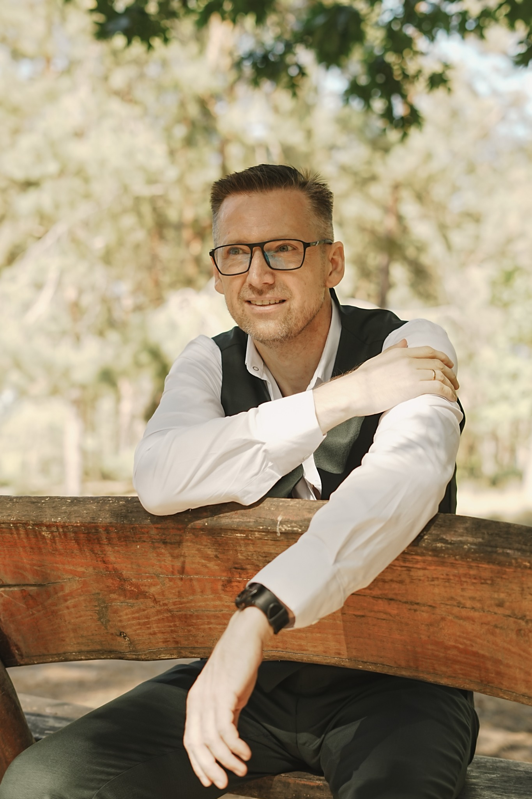

Адаптивне керування гібридними системами
Досліджую, як узгоджувати роботу вітрової й сонячної генерації та накопичувачів енергії за змінних умов. Фокус — керування гібридною системою як єдиним цілим.
Поєдную дослідження керування гібридними енергосистемами з розробленням інженерних інструментів. Мій фокус — взаємодія відновлюваної генерації, накопичення енергії та систем керування.

Пов’язую наукові питання з практичними задачами сучасної енергетики.
Досліджую, як узгоджувати роботу вітрової й сонячної генерації та накопичувачів енергії за змінних умов. Фокус — керування гібридною системою як єдиним цілим.
Моделюю роль накопичувачів у гібридних енергосистемах. Досліджую підходи до підвищення надійності, стійкості та ефективності їхньої роботи.
Розвиваю власну вебплатформу для оцінювання вітрових і сонячних електростанцій. Вона допомагає зіставляти проєктні варіанти, відстежувати вихідні припущення та формувати зрозумілі інженерні висновки.
Відкритий до професійного обміну, спільних досліджень та обговорення практичних застосувань.
Зв’язатися